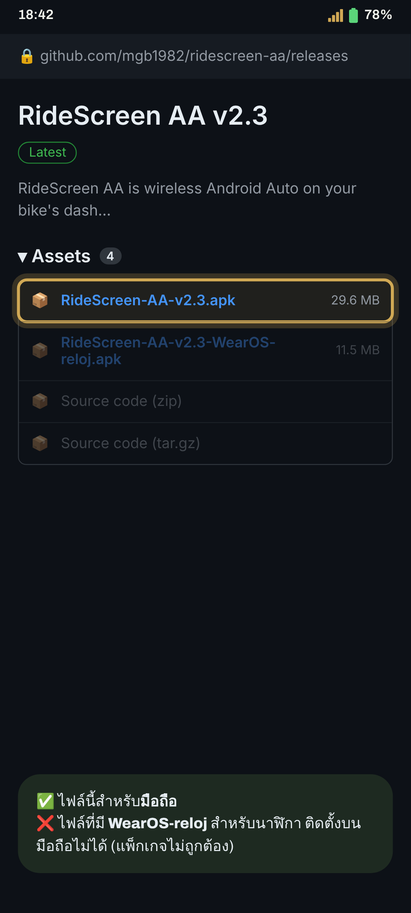
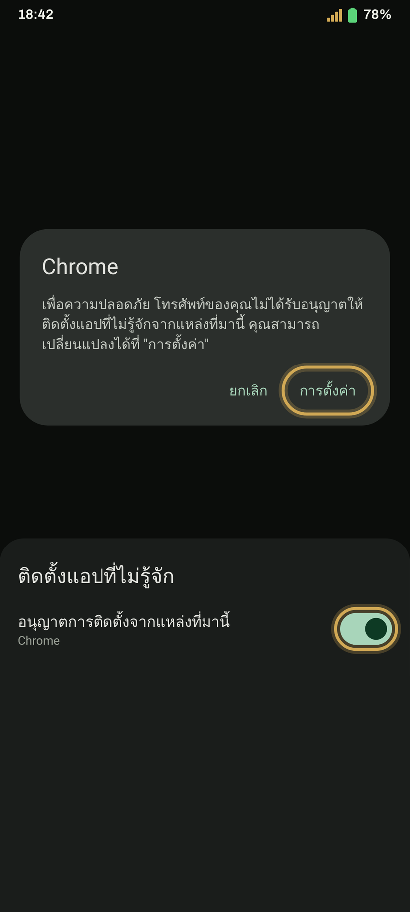
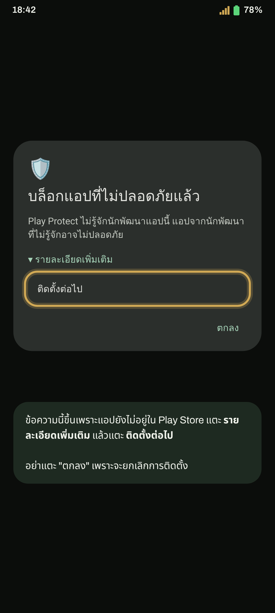
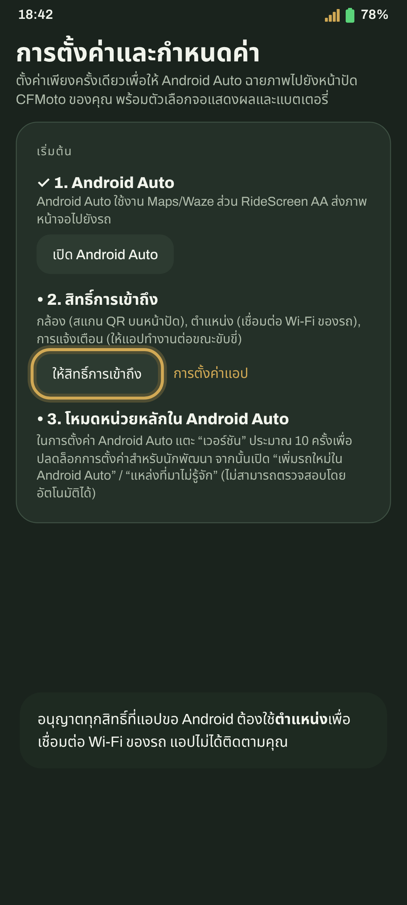
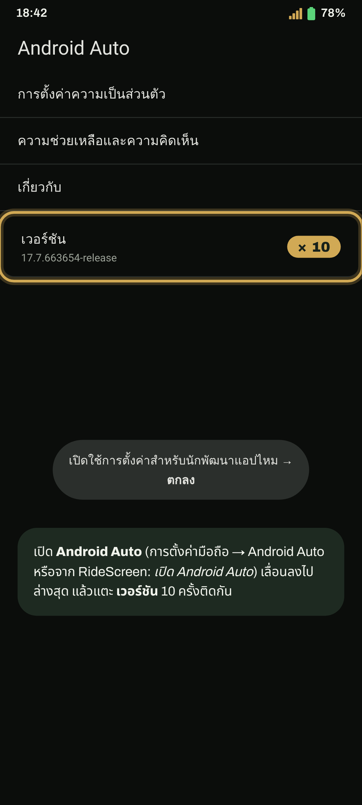
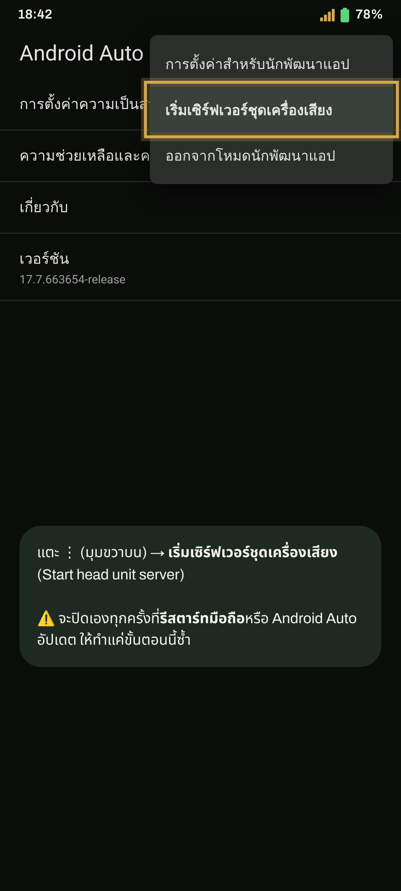
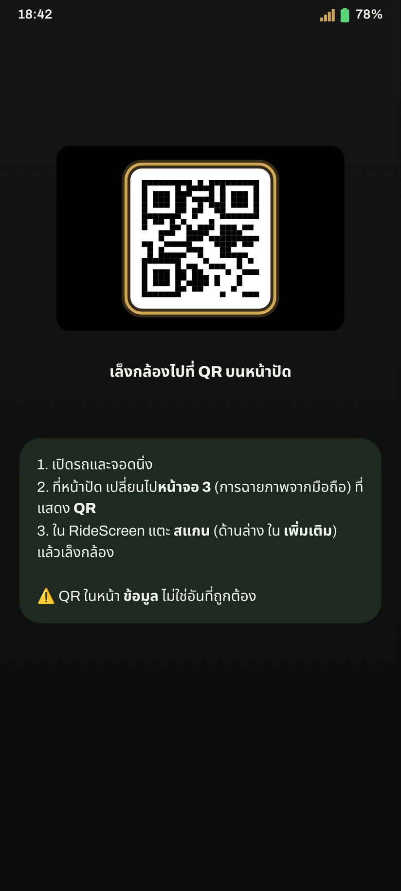
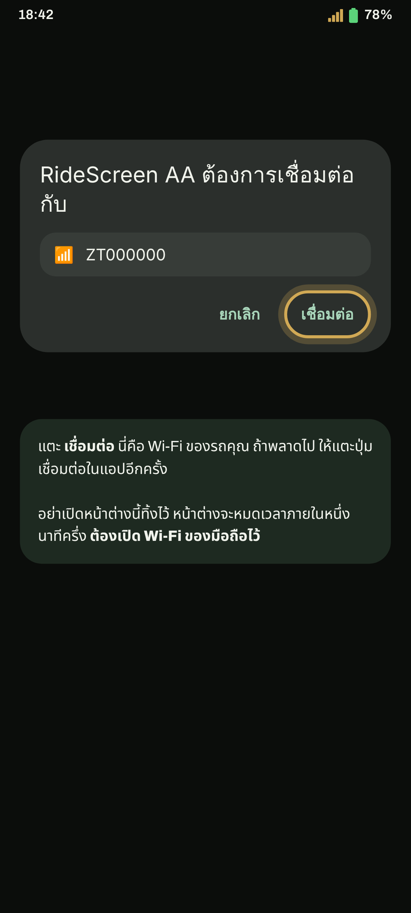
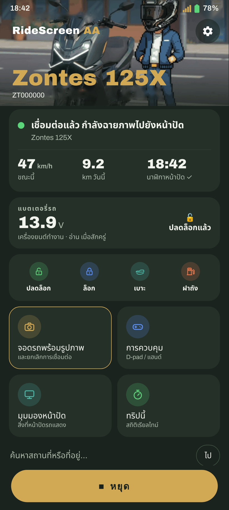

Android Auto บนหน้าปัด Zontes ของคุณ ทีละขั้นตอน ครั้งแรกใช้เวลาไม่กี่นาที หลังจากนั้นแตะครั้งเดียว หรือไม่ต้องแตะเลย
มีนาฬิกา Wear OS ไหม ทำต่อด้วยคู่มือนาฬิกาหลังจากนี้
แตะปุ่ม: เวอร์ชันล่าสุดจะดาวน์โหลดทันที (RideScreen-AA-v2.4.apk หรือเวอร์ชันปัจจุบัน)
ดาวน์โหลด APKชอบ GitHub มากกว่า ที่หน้าเวอร์ชันล่าสุด ใต้ Assets แตะ APK ที่ขึ้นต้นด้วย RideScreen-AA-v

เปิดไฟล์ที่ดาวน์โหลด ถ้า Android แจ้งว่าติดตั้งแอปจากแหล่งนี้ไม่ได้ ให้แตะ การตั้งค่า เปิด อนุญาตการติดตั้งจากแหล่งที่มานี้ แล้วย้อนกลับ
จากนั้นแตะ ติดตั้ง

ข้อความนี้ขึ้นเพราะแอปยังไม่อยู่ใน Play Store แตะ รายละเอียดเพิ่มเติม แล้วแตะ ติดตั้งต่อไป

ครั้งแรกจะเปิดหน้าการตั้งค่า อนุญาตทุกสิทธิ์ที่ขอ หรือแตะ อนุญาตทั้งหมดแล้ว เพื่อตรวจทั้งหมดในครั้งเดียว
Android ต้องใช้ตำแหน่งเพื่อเชื่อมต่อ Wi‑Fi ของรถและบันทึกการเดินทาง แอปไม่ได้ติดตามคุณ

เปิดการตั้งค่า Android Auto (การตั้งค่ามือถือ → Android Auto หรือจาก RideScreen) เลื่อนลงไปล่างสุดแล้วแตะ เวอร์ชัน 10 ครั้งติดกัน ยอมรับคำเตือน
ทำแค่ครั้งเดียว

ในหน้าจอเดียวกัน แตะ ⋮ (มุมขวาบน) → เริ่มเซิร์ฟเวอร์ชุดเครื่องเสียง (Start head unit server)

ที่หน้าปัด เปลี่ยนไปที่หน้าจอฉายภาพมือถือ (หน้าจอ 3 ใน 125X) ที่แสดงรหัส QR ใน RideScreen แตะ สแกน (ด้านล่าง ใน เพิ่มเติม) แล้วเล็งกล้อง

แตะ เชื่อมต่อ ใน RideScreen Android จะถามว่าอนุญาตให้แอปเชื่อมต่อ Wi‑Fi ของรถไหม (ชื่อตามรถของคุณ เช่น ZT…) แตะ เชื่อมต่อ

ไม่กี่วินาทีต่อมา Android Auto จะขึ้นบนหน้าจอรถ เก็บมือถือใส่กระเป๋าได้เลย
ครั้งต่อไป แค่แตะ เชื่อมต่อ ถ้าอยากให้เชื่อมต่อเองเมื่อสตาร์ทรถ: ⚙️ การตั้งค่า → เชื่อมต่อเมื่ออุปกรณ์ Bluetooth เชื่อมต่อเข้ามา → เลือก Bluetooth ของหน้าปัด (ขึ้นต้นด้วย "ZT") และอนุญาต แสดงทับบนแอปอื่นๆ
เคล็ดลับ: เมื่อเชื่อมต่อแล้ว คุณเปลี่ยนหน้าปัดไปหน้าจออื่นเพื่อดูหน้าปัดเดิมได้ แอปยังเชื่อมต่ออยู่และบันทึกการเดินทางต่อ และเมื่อกลับมาหน้าจอฉายภาพ Android Auto จะอยู่ตรงนั้นทันที
ครั้งแรกที่เชื่อมต่อ แอปจะขอสิทธิ์ไมโครโฟน: เลือก ขณะใช้แอป เพื่อใช้ "Ok Google" และปุ่มสั่งงานด้วยเสียงของอินเตอร์คอม

เปิด Wi‑Fi ของมือถือ ไม่ต้องเชื่อมต่อเครือข่ายใด แอปจะเชื่อมต่อ Wi‑Fi ของรถเอง
แอปทางการของรถ (Zontes / EasyConnection / Carbit) กำลังยึดการเชื่อมต่อกับหน้าปัด การตั้งค่า → แอป → แอปนั้น → บังคับหยุด แล้วเชื่อมต่อใหม่ ถ้าไม่ได้ใช้ ถอนการติดตั้งไปเลยง่ายที่สุด
ใน RideScreen แตะ ❓ ช่วยเหลือ → แชร์บันทึก ทันทีหลังเกิดปัญหา แล้วส่งเข้ากลุ่มพร้อมบอกรุ่นรถและมือถือ บันทึกไม่มีรหัสผ่านหรือหมายเลขซีเรียล
RideScreen AA ฟรีและเป็นโอเพนซอร์ส พัฒนาต่อจาก OpenCfMoto ของ Alexandru (zanderp) ไม่ใช่แอปทางการของ Zontes ภาพหน้าจอเป็นเพียงตัวอย่าง ข้อความจริงบนมือถือของคุณอาจต่างไปเล็กน้อย